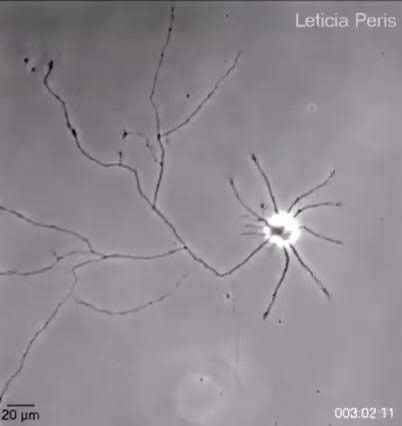

Qué cubre esta guía
Las citas remiten a la fuente y a su página o sección, por ejemplo Zeise p. 108, Purves p. 78 o apuntes, bloque III.
Fuera de alcance: la organización en lóbulos, las áreas de Brodmann y los sistemas de proyección, que no están desarrollados en el material de este certamen.
Lo esencial en 60 segundos
- La neurona tiene soma, dendritas que llevan la señal hacia el soma y un axón que la lleva a otras células Zeise §2.4.
- La polaridad no es azar: la forma se ajusta a la función y el crecimiento dendrítico sigue señales de quimioatracción apuntes, bloque I.
- La glía radial es a la vez célula madre y andamio de la migración neuronal hacia la corteza Purves pp. 517-553.
- Astrocitos, oligodendrocitos y ependimarias se distinguen por GFAP, O4 y su posición ventricular Purves pp. 517-553.
- La mielina aumenta la resistencia de membrana y baja la capacitancia; no cambia la resistencia axial Zeise §2.5.5.
- Los canales de sodio se concentran en los nodos de Ranvier y la conducción salta de nodo en nodo Purves pp. 67-83.
- Sin mielina la corriente decae antes del nodo siguiente y la conducción falla, como en la esclerosis múltiple Zeise §2.5.5.
- Curare y α-bungarotoxina bloquean el canal nicotínico; el diazepam modula el canal de cloro Kandel cap. 8.
Una célula polarizada: soma, dendritas y axón
La neurona es la unidad estructural y funcional del tejido nervioso, y su anatomía se organiza alrededor de una asimetría: un cuerpo celular o soma del que salen prolongaciones con destinos distintos. Las dendritas, del griego dendron, árbol, se ramifican como raíces y transmiten las señales hacia el soma; sus ramas terminan en botones que se acoplan a otra célula Zeise §2.4. El axón transmite las señales hacia otras células y termina en la terminal del axón. Esa división del trabajo define por dónde entra la información y por dónde sale, y es la base del correlato morfofuncional que el material de clases subraya apuntes, bloque I.
Reconocer una neurona exige más que su forma. Los criterios morfológicos piden soma y componentes axonal y dendrítico; los electrofisiológicos, estimular y registrar la respuesta en distintos puntos del axón, las dendritas y el soma, donde aparece un potencial de acción incipiente apuntes, bloque I. A ello se suma un criterio de medio: en cultivo la célula sobrevive con factores de crecimiento y con pH, oxígeno y nutrición controlados, pero no establece sinapsis de la misma fuerza que in vivo. Las tres pruebas son complementarias apuntes, bloque I.
La polaridad se construye durante el desarrollo. Las neuritas y el axón resultan de la diferenciación de una célula madre neural embrionaria, y la neurona cambia de forma en sintonía con su función apuntes, bloque I. El crecimiento no es azaroso: las dendritas se ramifican con un patrón específico guiado por proteínas de quimioatracción, y el factor de crecimiento del encéfalo hace que la neurona responda alargando el axón. En una célula dopaminérgica, los precursores de dopamina viajan hasta el extremo del árbol dendrítico, de modo que la geometría también ordena la química apuntes, bloque I.
El contacto entre neuronas tiene una arquitectura propia. Los primeros estudios morfológicos mostraron un engrosamiento de las membranas en las zonas de contacto y lo llamaron synapsis, toque de unión. En la sinapsis química, el botón presináptico contiene vesículas con transmisores, mientras la membrana de la célula siguiente presenta el engrosamiento llamado postsynaptic density Zeise §2.4. La sinapsis eléctrica, en cambio, usa puentes o uniones gap y permite el intercambio directo de señales químicas y eléctricas Zeise §4.1.1. Solo la primera convierte una señal eléctrica en una secreción química.
Por el axón viaja información codificada. Las señales de acción son digitales y se desplazan principalmente por los axones, desde el soma hasta los terminales; también forman nervios que llevan información desde receptores periféricos hacia el sistema nervioso central, o desde la médula y el tronco encefálico hacia músculos, glándulas y órganos efectores Zeise §2.5.6. El axón no procesa ni altera el mensaje: lo entrega intacto en la sinapsis. Esa fidelidad es la ventaja de la codificación digital, que resiste perturbaciones que una señal analógica convertiría en distorsión permanente Zeise §2.5.6.
La prolongación funciona como un cable con fugas. Un potencial que nace en el cono axónico se propaga de forma pasiva y se atenúa con la distancia, mientras las dendritas pueden aumentar o disminuir la señal que reciben antes de que llegue al soma Zeise §2.5.2. El axón regenera la señal a medida que avanza, de modo que la información no depende de que el potencial original sobreviva. Sin esa regeneración, la señal decaería antes de alcanzar la terminal Zeise §2.5.2.


La glía: andamio, vaina y acoplamiento
El tejido nervioso no es solo neuronas. Se calculan 86.000 millones o más de neuronas en el cerebro humano y una cifra similar de células gliales, generadas en pocos meses desde una pequeña población de células madre. El complemento neuronal se produce hasta poco después del nacimiento; las gliales mantienen grados de renovación durante toda la vida Purves pp. 517-553.
La glía radial es la pieza que une desarrollo y arquitectura. Conserva características moleculares de células gliales, mantiene un dominio apical junto a la luz del tubo neural y una prolongación basal que alcanza la superficie pial, y se divide lentamente Purves pp. 517-553. Su doble función es la clave: actúa como célula madre neural multipotente y, al mismo tiempo, como sustrato de migración de las neuronas posmitóticas. Las progenitoras basales o amplificadoras de tránsito se dividen de forma asimétrica y más rápido, con capacidad limitada; ya no contactan la luz, sus prolongaciones basales varían en longitud y son las responsables de amplificar el número de células diferenciadas Purves pp. 517-553.
Esa doble función explica por qué la migración radial sostiene la corteza. El componente glial sirve de sostén para que las neuronas alcancen estructuras complejas, y la corteza resultante organiza seis capas con distribución característica, como centro de procesamiento aferente y eferente apuntes, bloque I. El plegamiento en giros y surcos aumenta la superficie dentro del cráneo, empaqueta más neuronas y sinapsis y acorta distancias de comunicación, con lo que optimiza la eficiencia metabólica. Cuando la migración falla, la laminación se pierde: la agiria lisencefálica deja una corteza engrosada con cuatro capas mal organizadas en vez de seis, y la banda subcortical produce una doble corteza apuntes, bloque I.
Los destinos gliales se especifican con factores concretos. Los oligodendrocitos dependen de Olig1, Olig2 y Nkx2.1; los astrocitos, del antagonismo continuo entre proteínas bHLH, la señalización de Notch y la neurregulina; las células ependimarias, adyacentes a los ventrículos, evitan diferenciarse y pueden incluir una subpoblación de células madre neurales. Los marcadores permiten reconocer cada estirpe: GFAP identifica al astrocito, O4 al oligodendrocito y Sox2 a la célula madre neural embrionaria, mientras la nestina aparece en progenitoras neurales posteriores Purves pp. 517-553. A esa lista se suma la célula de Schwann, que expresa la conexina 32 Kandel cap. 11.
| Célula | Marcador o proteína distintiva | Dato que la define |
|---|---|---|
| Glía radial | Sox2 en el embrión | Célula madre multipotente y sustrato de migración; se divide lentamente |
| Astrocito | GFAP | Destino regulado por el antagonismo entre bHLH, Notch y neurregulina |
| Oligodendrocito | O4 | Destino regulado por Olig1, Olig2 y Nkx2.1 |
| Célula ependimaria | No aplica | Reviste los ventrículos y puede incluir una subpoblación de células madre |
| Célula de Schwann | Conexina 32 | Conecta las capas de mielina de una misma célula mediante uniones gap |
Las uniones gap son el otro modo de contacto. En ellas no existe separación entre los citoplasmas: puentes proteicos permiten el paso de iones y de pequeñas moléculas, de modo que las células quedan acopladas eléctrica y químicamente, y algunos segundos mensajeros también atraviesan Zeise §2.4. Aparecen sobre todo en sinapsis inhibitorias y no son exclusivas del sistema nervioso: están en todos los organismos vivos, en las plantas como plasmodesmos y en el corazón, que funciona gracias a ellas; además forman una familia de canales distinta de los canales iónicos clásicos Zeise §4.1.1. La sinapsis química, en cambio, está prácticamente restringida a contactos neuronales.
En la glía, las uniones gap cumplen funciones de mantenimiento. La conexina 32, expresada en células de Schwann, forma canales que conectan las capas de mielina de una misma célula y las mantiene unidas, además de permitir el paso de metabolitos e iones. Su mutación causa la forma ligada al X de la enfermedad de Charcot-Marie-Tooth Kandel cap. 11.
La conexina 26 repite el patrón en la cóclea. Sus canales de unión gap sostienen la secreción de fluidos del oído interno, y sus mutaciones explican hasta la mitad de los casos de sordera congénita. El acoplamiento directo también participa en la homeostasis de los fluidos y en la cohesión de la mielina Kandel cap. 11.
La mielina y el nodo de Ranvier
La mielina es una envoltura glial, no una parte de la neurona. En el sistema nervioso central la producen los oligodendrocitos y en el periférico las células de Schwann, y deja al descubierto solo los nódulos de Ranvier, llamados así porque allí el axón es más grueso, como un nódulo en una brizna de césped Zeise §2.5.5. Los canales de sodio dependientes de voltaje, necesarios para el potencial de acción, se concentran en esos nodos; el resto de la membrana del axón mielinizado queda sin la maquinaria que regenera la señal Purves pp. 67-83.
La conducción ocurre en tres pasos. Un potencial de acción generado en un nodo hace que la corriente fluya de forma pasiva por el interior del axón hasta el nodo siguiente; ese flujo local despolariza el nodo vecino y genera allí un nuevo potencial de acción; el ciclo se repite a lo largo de la fibra. Como la corriente solo atraviesa la membrana en los nodos, la propagación se llama saltatoria, y es lo que permite transmitir a larga distancia pese a que las propiedades eléctricas pasivas de las neuronas son relativamente pobres Purves pp. 67-83. La mielina no genera el potencial: lo hace eficiente. En mamíferos, la velocidad resultante alcanza hasta 100 m/s, unos 360 km/h Zeise §2.5.5.
El efecto físico se entiende con tres parámetros. La mielina aumenta la resistencia de membrana, porque la corriente deja de fugarse por el internodo, y disminuye la capacitancia, porque las capas de lípido separan las placas conductoras del interior y del exterior, de modo que hace falta menos carga para cambiar el voltaje Zeise §2.5.5. No cambia la resistencia axial: el axoplasma conserva su diámetro y lo que se engrosa es la fibra completa, con capas gliales añadidas por fuera. El resultado es que la corriente local llega más lejos y más fuerte al nodo siguiente Zeise §2.5.5.
Conviene precisar el salto. La corriente local recorre todo el internodo; lo que se regenera en cada nodo es la señal de acción, no el trayecto. La mielina no acorta el camino geométrico: reduce el número de puntos de regeneración a cerca del 1 % de la membrana Zeise §2.5.5. Lo lento es cargar y regenerar; lo rápido es el esparcimiento pasivo, y la mielina explota esa diferencia Zeise §2.5.2. Al abrirse menos canales por unidad de longitud se mueven menos iones y la bomba de sodio y potasio gasta menos.
La longitud del internodo tiene un óptimo. Si es demasiado largo, la corriente decae por debajo del umbral y la conducción falla; es exactamente lo que ocurre en la desmielinización, donde cae la constante de longitud y el nodo siguiente no alcanza el umbral Zeise §2.5.5. La pérdida de mielina, entonces, no solo enlentece: puede interrumpir la señal, y en la esclerosis múltiple se suma la pérdida de axones, que no se recupera Purves p. 67.
Cuando falla la vaina o el canal
La esclerosis múltiple es una enfermedad del sistema nervioso central por desmielinización e inflamación de las vías axónicas, con inicio entre los 20 y los 40 años. El curso típico es abrupto, con déficits que persisten días o semanas y luego disminuyen; el espectro va desde pacientes sin déficit persistente hasta un deterioro progresivo e implacable Purves pp. 67-83. El diagnóstico es difícil y se apoya en un problema neurológico que disminuye y reaparece en un sitio no relacionado, con ayuda de resonancia magnética o evidencia funcional Purves p. 67.
La histología post mortem muestra lesiones desmielinizantes con infiltración inflamatoria y, a veces, pérdida de axones; el líquido cefalorraquídeo presenta un número anormal de células inflamatorias y anticuerpos aumentados Purves pp. 67-83. Esa doble lesión explica por qué las formas crónicas progresan. Los síntomas dependen de la ubicación de las lesiones.
| Síntoma | Vía afectada |
|---|---|
| Ceguera monocular | Nervio óptico |
| Debilidad o parálisis motora | Vías corticoespinales |
| Sensaciones somáticas anómalas | Vías somatosensitivas, a menudo cordones posteriores |
| Visión doble | Fascículo longitudinal medial |
| Mareos | Vías vestibulares |
Fuente: Purves p. 67.
La causa sigue siendo desconocida, aunque el sistema inmunitario contribuye al daño y las terapias inmunorreguladoras benefician a algunos pacientes. La hipótesis principal es autoinmune: una persona genéticamente susceptible se infecta de forma transitoria con un microorganismo que expresa una molécula parecida a la contactina-2, proteína de células gliales y axones presente en los nodos de Ranvier; la respuesta contra el invasor no distingue la proteína propia y destruye la mielina normal, un mimetismo molecular Purves p. 67. El experimento que la apoya induce encefalomielitis alérgica experimental al inmunizar animales con constituyentes de la vaina, con imágenes similares a la EM Purves pp. 67-83.
La hipótesis alterna invoca una infección persistente. El precedente es la paraparesia espástica tropical por HTLV-1, con debilidad progresiva de las piernas, control deficiente de la vejiga, hiperreflexia osteotendinosa y signo de Babinski; aun así, nunca se han presentado evidencias convincentes de un virus asociado a la EM Purves p. 67. El síndrome de Guillain-Barré comparte esa pérdida de mielina y también produce defectos de conducción axónica, aunque el material no lo desarrolla Purves pp. 67-83.
Las canalopatías son el equivalente genético del bloqueo experimental. Son enfermedades por mutaciones en genes de canales iónicos, y más de 20 enfermedades hereditarias se asocian a mutaciones en canales de sodio; la epilepsia, por ejemplo, implica al menos cinco genes SCN de sodio, siete KCN de potasio y dos CACN de calcio Purves pp. 82-83. El punto conceptual es que una misma familia de canales puede fallar por ganancia o por pérdida de función, y el fenotipo depende de qué célula usa ese canal Purves p. 83.
| Gen y canal | Tipo de alteración | Fenotipo |
|---|---|---|
| SCN9A, sodio | Ganancia: la compuerta se abre a potenciales más hiperpolarizados | Eritromelalgia hereditaria, con dolor ardiente y descargas repetitivas |
| SCN9A, sodio | Pérdida de función | Insensibilidad congénita al dolor |
| CACNA1D, calcio | Pérdida: se elimina la entrada de calcio | Sordera y disfunción del nodo sinoauricular |
| KCNQ2 y KCNQ3, potasio | Reducción del flujo de potasio | Convulsión neonatal benigna familiar |
| CACNA1A, calcio | Pérdida del flujo de calcio | Ataxia episódica tipo 2 |
Fuente: Purves pp. 82-83.
El dolor ofrece el ejemplo más limpio de ganancia de función. Las neuronas nociceptivas de los ganglios de la raíz dorsal expresan el canal de sodio SCN9A; en la eritromelalgia hereditaria la compuerta se abre a potenciales más hiperpolarizados, entra más sodio y la neurona dispara de forma repetitiva, lo que produce dolor ardiente intenso Purves pp. 82-83. La pérdida de función del mismo canal, en cambio, causa insensibilidad congénita al dolor. La sordera ilustra la pérdida: si CACNA1D no permea calcio, falla la liberación de transmisor dependiente de calcio en las células ciliadas Purves pp. 82-83.
Los bloqueadores de canales diseccionan esa fisiología. El curare, alcaloide vegetal usado como veneno de flechas sudamericanas, es un antagonista competitivo del canal nicotínico activado por acetilcolina del músculo esquelético: se une al mismo sitio del agonista, su unión no abre el canal y bloquea el acceso del transmisor, con un bloqueo débil y reversible Kandel cap. 8. La α-bungarotoxina, veneno de serpiente, bloquea el mismo canal con una unión fuerte y virtualmente irreversible. La diferencia entre ambos está en la fuerza del bloqueo y en su reversibilidad, no en el canal Kandel cap. 8.
El diazepam muestra que modular no es bloquear. Se une a un sitio regulatorio de los canales de cloro activados por GABA, con un efecto alostérico y no competitivo: aumenta la frecuencia de apertura en respuesta al transmisor y no interactúa con el sitio de unión de GABA Kandel cap. 8. El tetraetilamonio bloquea canales de potasio desde el lado intracelular solo cuando la compuerta interna se abre por despolarización. También hay bloqueadores fisiológicos, como magnesio, calcio y espermina, que se unen a la boca o dentro del poro y quedan influidos por el campo eléctrico de la membrana Kandel cap. 8. La sensibilidad del músculo esquelético al curare y a la nicotina se explicó por una molécula receptiva propuesta por Langley en 1906, después aislada como el receptor de acetilcolina de la unión neuromuscular; el concepto de receptor, introducido por Ehrlich en 1900, servía para explicar la acción selectiva de toxinas y fármacos y la especificidad inmunológica Kandel cap. 11. Bloquear un canal, en suma, es separar el componente que produce la señal del que la recibe Kandel cap. 8.
Puntos de examen
- Neurona: soma, dendritas que llevan la señal hacia el soma y axón que la lleva a otras células; la sinapsis química usa vesículas y densidad postsináptica Zeise §2.4.
- Glía radial: célula madre multipotente y sustrato de migración; se divide lentamente y conserva un dominio apical con cilio primario Purves pp. 517-553.
- Marcadores: GFAP en el astrocito, O4 en el oligodendrocito, Sox2 en la célula madre embrionaria y nestina en progenitoras Purves pp. 517-553.
- Oligodendrocitos: Olig1, Olig2 y Nkx2.1; astrocitos: bHLH, Notch y neurregulina Purves pp. 517-553.
- Mielina: sube la resistencia de membrana, baja la capacitancia y no altera la resistencia axial Zeise §2.5.5.
- Nodos de Ranvier: únicos sitios con canales de sodio dependientes de voltaje; la conducción es saltatoria Purves pp. 67-83.
- Internodo demasiado largo o desmielinizado: la corriente cae bajo el umbral y la conducción falla Zeise §2.5.5.
- EM: inicio entre 20 y 40 años, lesiones desmielinizantes con inflamación, a veces pérdida axonal, y LCR con células y anticuerpos Purves p. 67.
- EM: contactina-2 en los nodos de Ranvier y mimetismo molecular; el apoyo experimental es la encefalomielitis alérgica experimental Purves p. 67.
- Canalopatías: más de 20 enfermedades hereditarias por canales de sodio; epilepsia con al menos cinco SCN, siete KCN y dos CACN Purves pp. 82-83.
- SCN9A: la ganancia causa dolor ardiente y la pérdida causa insensibilidad congénita al dolor Purves pp. 82-83.
- Curare: bloqueo competitivo débil y reversible; α-bungarotoxina: bloqueo fuerte y casi irreversible del mismo canal Kandel cap. 8.
- Diazepam: modulador alostérico que aumenta la frecuencia de apertura del canal de cloro; TEA: bloqueo de canal abierto desde el interior Kandel cap. 8.
- Conexina 32: Charcot-Marie-Tooth ligada al X; conexina 26: hasta la mitad de la sordera congénita Kandel cap. 11.
Límites del material
- El transporte axonal molecular no se desarrolla: no hay cinesina, dineína ni movimiento de organelos, solo el transporte de información a lo largo del axón Zeise §2.5.6.
- El síndrome de Guillain-Barré solo se nombra junto a la EM; no hay epidemiología, clínica ni tratamiento Purves pp. 67-83.
- La microglía y la vigilancia inmunitaria del sistema nervioso no se desarrollan; la microglía aparece solo en una figura de linajes apuntes, bloque I.
- No se cubren los subtipos de receptores, la remielinización ni la ultraestructura completa de la sinapsis; el material se detiene en la arquitectura general Zeise §2.4.
Figuras de la guía
Toca una miniatura para volver a la figura en su sección.